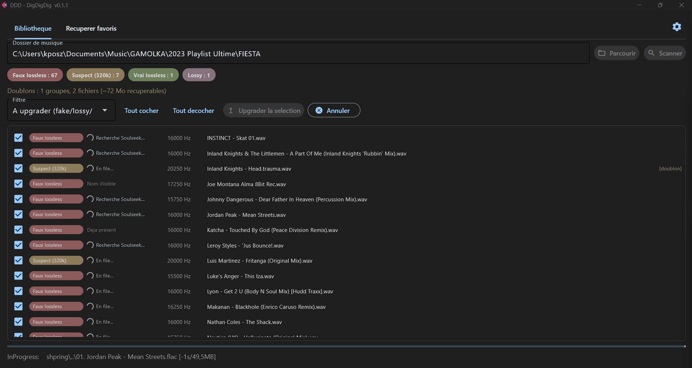
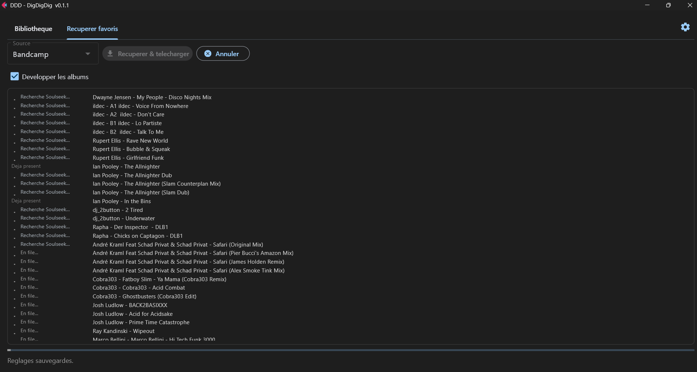

What is it?
DDD cleans up your music library and bumps it to club-playable quality, on its own. It unmasks fake lossless (MP3s disguised as .flac/.wav), finds a real version on Soulseek (FLAC, WAV or AIFF, with an automatic MP3 320 fallback), checks every file by spectrum, and files it into a clean library. No need to be a developer : it's a window.
Your sources
Scan any folder on your disk, pull your Discogs and Bandcamp favorites, or paste a YouTube set / playlist.
Soulseek
Looks for FLAC / WAV / AIFF, with an automatic MP3 320 fallback, live per-track status and automatic resume. Anything not found comes out as Discogs / Bandcamp buy links.
The spectrum
FFT analysis : ranks as Lossless / HQ / Iffy / Bad, plus duration and identity checks. Only the right track, above your bar, is kept.
What it looks like
Two tabs, a native window. No terminal.


The thing that changes everything : the spectrum is law
An MP3 320 re-encoded as FLAC is still an MP3. Soulseek's filters can't see it : the container proudly shows "1411 kbps". DDD looks at the real spectrum : a wall of frequencies at 16 kHz gives away the lossy source. The declared format and bitrate are only used for the Soulseek search, never for the keep-or-reject decision. The spectrum doesn't lie, tags do : that's what tells a real 320 / lossless apart from an upscale. Every downloaded file is re-audited (spectrum + duration + title/artist identity) and ranked by its real cutoff. You pick the minimum bar to keep with three presets : DJ Club (>= 18 kHz, default, MP3 320 included), Audiophile (>= 20 kHz) or Purist (pure lossless). MP3s below 320 kbps are banned no matter what ; the rest goes to the trash.
How it works
Three clicks in the window.
- Fill in your access (Settings) : Soulseek login, Discogs token, and the library folder.
- Scan a folder (or pull your favorites) : DDD ranks every file and spots duplicates.
- Upgrade : what passes your bar lands in your library, the rest goes to the trash. One clean, de-duplicated library.
Also available on the command line : ddd scan, ddd upgrade,
ddd rename, ddd buy, ddd import, ddd scrape,
ddd acquire, ddd config, ddd gui. Portable Python core
(Windows / Mac / Linux).